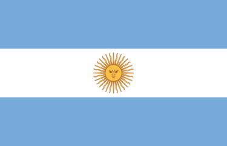
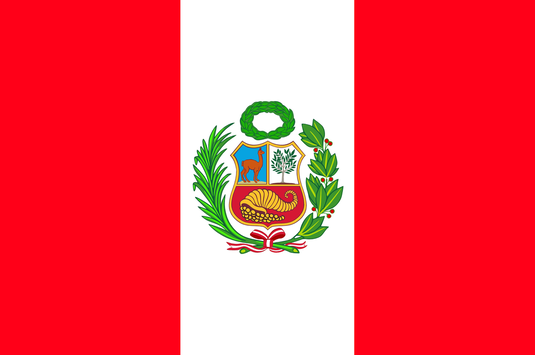

Le guide par pays
Bienvenue dans notre guide des destinations incontournables de l'Amérique du Sud ! Découvrez l'Argentine, la Bolivie, le Chili, la Colombie, l'Équateur et le Pérou à travers une exploration riche en culture, en nature et en aventures. Plongez dans la diversité des paysages, des saveurs et des traditions de cette région fascinante. Préparez-vous à être ébloui par la beauté et la diversité de l'Amérique du Sud !
 Argentine
Argentine
 Bolivie
Bolivie
 Chili
Chili
 Colombie
Colombie
 Équateur
Équateur
 Pérou
Pérou
Notre guide pratique de l'Amérique du Sud
L'Amérique du Sud, avec sa diversité culturelle, sa nature luxuriante et son histoire riche, attire les voyageurs du monde entier. Notre guide pratique est conçu pour vous aider à découvrir cette région fascinante de manière approfondie et enrichissante.
Que vous soyez un aventurier à la recherche de défis en plein air, un passionné d'histoire et de culture, ou simplement un voyageur curieux, notre guide vous offre une mine d'informations pour planifier votre voyage et vivre des expériences mémorables.
Du sommet des Andes aux rives de l'Amazonie, chaque pays d'Amérique du Sud possède sa propre identité culturelle et ses merveilles naturelles uniques. Notre guide vous propose un aperçu détaillé de chaque destination, vous permettant de découvrir les incontournables ainsi que les trésors cachés de la région.
L'Amérique du Sud regorge d'opportunités pour vivre des expériences uniques et authentiques. Que vous participiez à un festival traditionnel, que vous découvriez des saveurs locales dans un marché animé, ou que vous exploriez des sites archéologiques fascinants, notre guide vous aide à trouver les expériences qui correspondent à vos intérêts et à votre style de voyage.
Nous sommes convaincus que notre guide pratique sur l'Amérique du Sud enrichira votre voyage et vous aidera à créer des souvenirs inoubliables dans cette région dynamique et envoûtante. N'hésitez pas à l'emporter avec vous lors de votre prochaine aventure sud-américaine!
Bon voyage!
Voir le guide !Météo des pays sud-américains
Le tableau ci-dessous résume les meilleures mois pour voyager dans chaque pays. Pour donner notre avis, on a pris en compte les températures moyennes, le niveau et l’intensité des précipitations et le nombre de jours d’ensoleillement de chaque pays.
| Pays | Janvier | Février | Mars | Avril | Mai | Juin | Juillet | Août | Septembre | Octobre | Novembre | Décembre |
|---|---|---|---|---|---|---|---|---|---|---|---|---|
|  Argentine | 🌞 | 🌞 | 🌞 | 🌞 | ⛅️ | 🌧️ | 🌧️ | ⛅️ | 🌞 | 🌞 | 🌞 | 🌞 |
 Bolivie Bolivie |
🌧️ | ⛅️ | ⛅️ | 🌞 | 🌞 | 🌞 | 🌞 | 🌞 | 🌞 | 🌞 | ⛅️ | ⛅️ |
 Chili Chili |
🌞 | 🌞 | 🌞 | 🌞 | ⛅️ | 🌧️ | 🌧️ | ⛅️ | 🌞 | 🌞 | 🌞 | 🌞 |
 Colombie Colombie |
🌞 | 🌞 | 🌞 | 🌧️ | ⛅️ | ⛅️ | 🌞 | 🌞 | 🌞 | 🌧️ | ⛅️ | ⛅️ |
 Équateur Équateur |
🌞 | 🌞 | 🌞 | 🌧️ | ⛅️ | ⛅️ | 🌞 | 🌞 | 🌞 | 🌧️ | ⛅️ | ⛅️ |
|  Pérou | 🌧️ | 🌧️ | 🌧️ | ⛅️ | 🌞 | 🌞 | 🌞 | 🌞 | 🌞 | 🌞 | ⛅️ | ⛅️ |